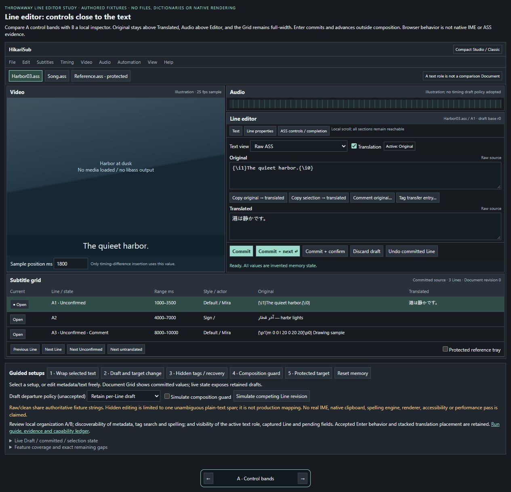

Open review · Line editor · HTML
Metadata, tags and the active text role
Compare control bands and a local inspector. Try metadata drafts, selection wrapping, tag completion, spelling, raw/hidden entry and explicit commit/advance.
Memory-only working study. Enter and stacked translation placement are accepted; draft and hidden-tag boundary policies remain open. Native input evidence is separate.